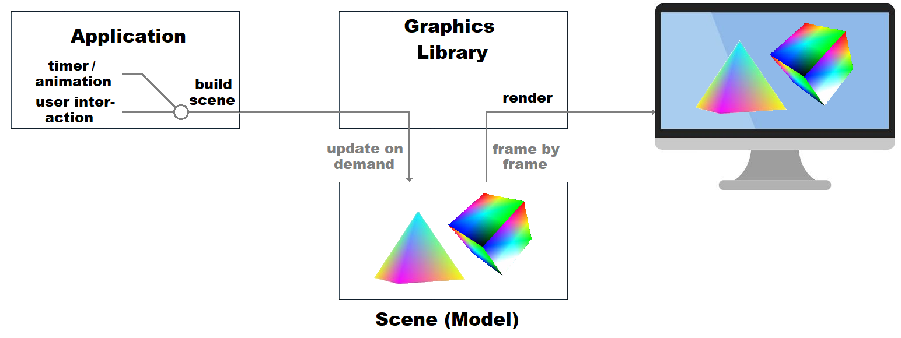
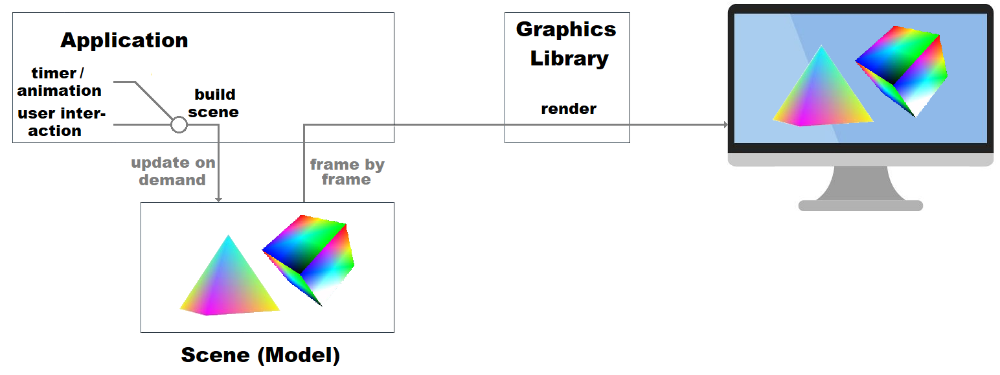
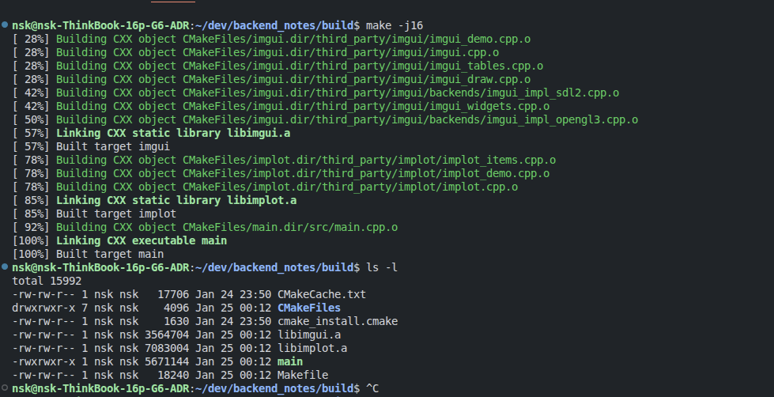

1. Dear ImGui
Полезно
Начнем с тех кто использует библиотеку Dear Imgui;
Thirdparty полезные расширения;
Немного про Docking;
Поддерживаемые backend’ы;
SDL and OpenGL
SDL2 - это Simple DirectMedia Layer, то, что обычно называют “фреймворком”.
SDL упрощает обработку ввода, работу с окнами, аудио и тому подобное (хотя он также может делать какую-то очень базовую графику).
Он позаботятся о загрузке текстур и ресурсов, отрисовке на экране, воспроизведении аудио и т. д. Но им не хватает игрового шаблона, который есть у полноценного движка: например, коллизий, физики, управления сценой и т. д.
OpenGL - это Open Graphics Library 3d графический API, он упрощает сложный рендеринг при использовании видеокарты. У видеокарт разные инструкции, поэтому он, по сути, преобразует то, что вы хотите нарисовать на экране, во что-то, что видеокарта может понять. OpenGL, DirectX и Vulkan - это большие графические API для работы с видеокартой.
Особенности Immediate Mode GUI vs Retained Mode
Retained mode. Приложение создает сцену из графических примитивов, таких как фигуры, линии и т.д., образуя математическую модель сцены. Графическая библиотека хранит модель сцены в памяти. При отрисовки каждого кадра, приложение обращается к графическому API за обновлением сцены. Затем библиотека отрисовывает сцену.
Пример Retained Mode

Пример Immediate Mode 
Основными особенностями можно назвать:
Интерфейс
ImGuiвызывается в цикле, каждая итерация цикла считается одним кадром.Перед началом кадра библиотека должна получить все данные касательно положения мыши, нажатых клавиш и прочих вводных.
Затем вызывается функция, в которой пользователь библиотеки получает структуру ui, рисует свой интерфейс. В этот момент библиотека в реальном времени формирует все виджеты, для каждого виджета определяет попала ли на него мышь, и формирует вершины и треугольники, которые потом будут рисоваться.
Теперь библиотека возвращает все сформированные mesh’и и отдаёт их на рисование бэкенду. Он рисует это на экран.
И так повторяется 60 кадров в секунду (или больше).
Установка (подключение к проекту)
Необходимые зависимоисти
sudo apt install libsdl2-dev libgl1-mesa-dev libglew-dev
Допустим, мы захотели создать новый проект. Начнем с потенциальной структуры проекта:
"имя_проекта"
├── include
│ ├── "заголовочные_файлы".h
├── src
│ ├── "исполняемые_файлы".cpp
│ └── main.cpp - самый главный исполняемый файл
├── third_party - сторонние проекты\библиотеки и т.д.
│ ├── imgui
│ ├── implot
│ └── и др.
├── README.md
├── CMakeLists.txt
├── .gitignore
├── .gitmodules
└── и пр.
Сабмодули (Git Submodules)
Для подключения сторонних проектов в ваш репозиторий можно не просто копировать весь код проекта, а обернуть это намерение в виде ссылки на нужный вам репозиторий.
Осуществляется это про помощи команды git submodule add "ссылка" "куда кладем" и т.д.. RU, ENG ссылки на документацию.
Добавим в наш проект 2 репозитория, которые будем усердно изучать: Dear Imgui и его дополнение для работы с графиками Implot.
git submodule add https://github.com/epezent/implot.git third_party/implot
git submodule add -b docking https://github.com/ocornut/imgui.git third_party/imgui
В данном случае я кладу оба проекта в директорию (см. дерево выше) third_party.

Таким образом, получаем в виде ссылок сторонние проекты в нашем репозитории. Довольно удобно, не нужно скачивать и копировать все файлы. Также, можно привязываться к конкретному коммиту проекта (см. пример ниже).
.gitmodules выглядит следующим образом:
[submodule "third_party/imgui"]
path = third_party/imgui
url = https://github.com/ocornut/imgui.git
branch = docking # указываем конкретную ветку (можно хэш коммита)
[submodule "third_party/implot"]
path = third_party/implot
url = https://github.com/epezent/implot.git
ВАЖНО обязательно выполните команду (репозитории скачаются на ваш компьютер):
git submodule update --remote --recursive
# или
git submodule update --init --recursive
CMakeLists.txt (сборка проекта)
Допустим, у нас есть стандартная точка входа в нашу программу "имя_проекта"/src/main.cpp и мы хотим использовать её как стантартную библиотеку, например #include <iostream>:
main.cpp
#include <iostream>
#include "imgui.h"
#include "implot.h"
int main(int argc, char *argv[]) {
return 0;
}
Для этого необходимо сначала собрать наш проект. В нашем случае, при помощи “сборщика” Cmake.
Создаем (или открываем, если он уже есть) в корне директории файл CMakeLists.txt, в котором будут находится правила сборки вашего проекта:
CMakeLists.txt
cmake_minimum_required(VERSION 3.14)
project(backend_notes)
set(CMAKE_CXX_STANDARD 17)
set(THIRD_PARTY_DIR ${PROJECT_SOURCE_DIR}/third_party)
set(SRC_DIR ${PROJECT_SOURCE_DIR}/src)
set(INCLUDE_DIR ${PROJECT_SOURCE_DIR}/include)
# SDL2
find_package(SDL2 REQUIRED)
include_directories(${SDL2_INCLUDE_DIRS})
# OpenGL/GLEW
find_package(OpenGL REQUIRED)
find_package(GLEW REQUIRED)
include_directories(${INCLUDE_DIR})
add_library(imgui STATIC
${THIRD_PARTY_DIR}/imgui/imgui.cpp
${THIRD_PARTY_DIR}/imgui/imgui_draw.cpp
${THIRD_PARTY_DIR}/imgui/imgui_demo.cpp
${THIRD_PARTY_DIR}/imgui/imgui_tables.cpp
${THIRD_PARTY_DIR}/imgui/imgui_widgets.cpp
${THIRD_PARTY_DIR}/imgui/backends/imgui_impl_sdl2.cpp
${THIRD_PARTY_DIR}/imgui/backends/imgui_impl_opengl3.cpp
)
target_include_directories(imgui PUBLIC ${THIRD_PARTY_DIR}/imgui)
target_compile_options(imgui PRIVATE -fPIC)
add_library(implot STATIC
${THIRD_PARTY_DIR}/implot/implot.cpp
${THIRD_PARTY_DIR}/implot/implot_demo.cpp
${THIRD_PARTY_DIR}/implot/implot_items.cpp
)
target_include_directories(implot PUBLIC ${THIRD_PARTY_DIR}/implot)
target_link_libraries(implot PRIVATE imgui)
target_compile_options(implot PRIVATE -fPIC)
add_executable(main ${SRC_DIR}/main.cpp)
target_link_libraries(main PRIVATE imgui implot ${SDL2_LIBRARIES} ${OPENGL_LIBRARIES} ${GLEW_LIBRARIES})
set()- используется для определения, изменения или удаления переменных;include_directories()- указывает компилятору, где искать заголовочные файлы, используя директиву #include, аналогично флагу-IвGCC/Clang;find_package()- библиотека предоставляет package configuration file, который импортирует вCMakeLists.txtприложения таргет библиотеки. Этот файл, вместе с собранной библиотекой, ее публичными заголовочными файлами и некоторой другой информацией устанавливается в директорию, которая потом указывается в переменнойCMAKE_PREFIX_PATHпри сборке проекта.add_library()- создает цель (target) библиотеки из указанных исходных файлов, определяя её имя и тип (STATIC,SHAREDилиMODULE). Это ключевая команда для сборки библиотек, позволяющая управлять зависимостями и типами библиотек (статические .a/.lib, динамические .so/.dll или плагины).STATIC- Статическая библиотека представляет собой собрание *.obj-файлов библиотеки (НЕ исполняемый файл), который мы можем, указав линкеру, прицепить к нашей программе в момент компиляции. ПримерSHARED- УЖЕ исполняемый файл. Динамическая линковка выполняется средствами платформы (операционной системы) в процессе работы программы. Все так же у нас в руках *.lib и *.h файлы, однако, теперь к ним добавляется.dll(.soдля Linux). *.lib-файл теперь содержит только вызовы к*.so, где лежат непосредственно алгоритмы и которые вызываются уже на ходу, а не компилируются.Примерtarget_include_directories(imgui PUBLIC ${THIRD_PARTY_DIR}/imgui)- При сборке самой библиотеки, добавляет эту папку в список путей, в которых компилятор ищет инклуды.target_link_libraries()- связываем исполняемые файлы или библиотеки (targets) с другими библиотеками, указывающая, какие файлы нужно подключить при линковке.
{kind=link}
{kind=link}
Собираем
mkdir build && cd build
cmake ../
make -j16 # вместо '16' можно указать другое количество потоков для компиляции.

Готово. Хотя бы компилируется.